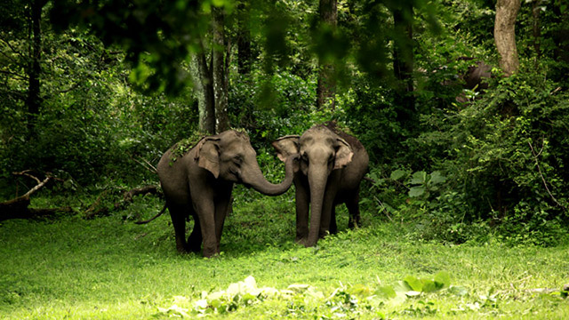
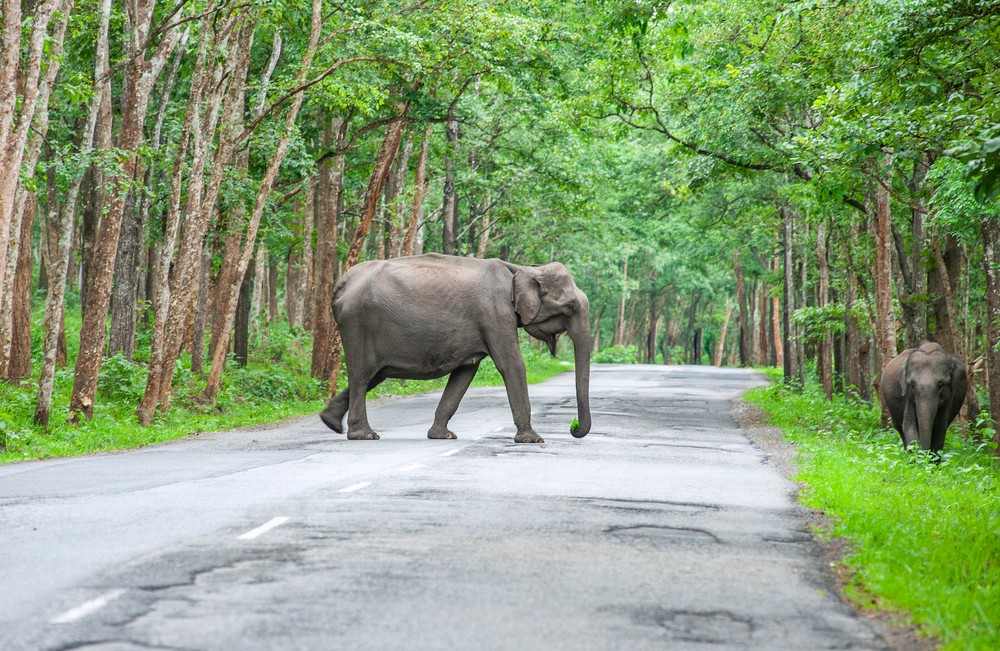

Wayanad Wildlife Sanctuary is a wildlife
sanctuary in Wayanad, Kerala, India with an extent of
344.44 km2 (132.99 sq mi) and four hill ranges namely
Sulthan Bathery, Muthanga, Kurichiat and Tholpetty.
A variety of large wild animals such as gaur, Asian
elephant, deer and tiger are found there.
There are also quite a few unusual birds in the
sanctuary. In particular, Indian peafowl tend to
be very common in the area. Wayanad Wildlife
Sanctuary is the second largest wildlife sanctuary
in Kerala. It is bestowed with lush green forests
and rich wildlife. This wildlife area houses some
of the rare and endangered species of both flora and fauna.
Established in 1973, the sanctuary is now an integral
part of the Nilgiri Biosphere Reserve. It is bounded by
protected area network of Nagarhole National Park and
Bandipur National Park in Karnataka in the northeast,
and on the southeast by Mudumalai National Park in
Tamil Nadu.
It is part of the Deccan Plateau and the vegetation
is predominantly of the south Indian moist deciduous
teak forests. Also, the sanctuary has pastures of the
west-coast semi-evergreen trees. The wildlife sanctuary
comes under Protect Elephant and one can spot herd of
elephants roaming in the area. Elephant rides are arranged
by the Kerala Forest Department.
Wayanad district has the largest population of Adivasi
in Kerala. Scheduled tribes here include Paniyas,
Kurubas, Adiyans, Kurichiyas, Ooralis and Kattunaikkans.
Comprising an area of 2126 km2, Wayanad has a powerful
history. Relicts and edicts found in various parts of
Wayanad speak of an important prehistoric era.
Historians are of the view that organised human
life existed in these parts, at least ten centuries
before Christ.
The sanctuary is part of the Nilgiri Biosphere Reserve.
The Western Ghats, Nilgiri Sub-Cluster (6,000+ km2),
including all of the sanctuary, is under consideration
by the World Heritage Committee for selection as a World
Heritage Site.
A monitoring programme of the Forest Department for
2017-18 has found that the Wayanad Wildlife Sanctuary
(WWS), holds the largest tiger population in the State.
Of the total 176 tigers in the State, 75 were identified
from the WWS, which is part of a large forest complex
holding the single largest population of tigers in India.